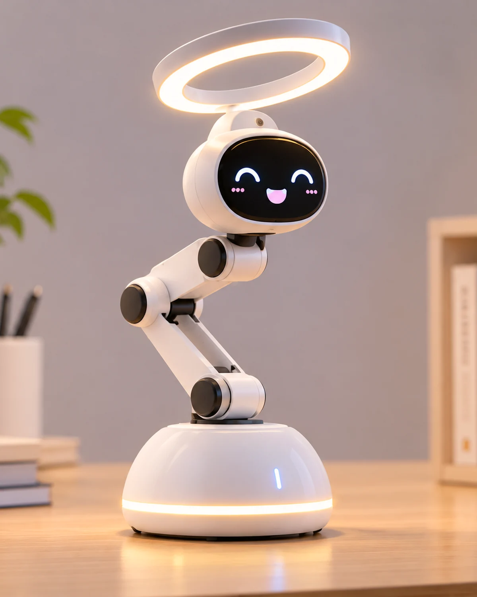
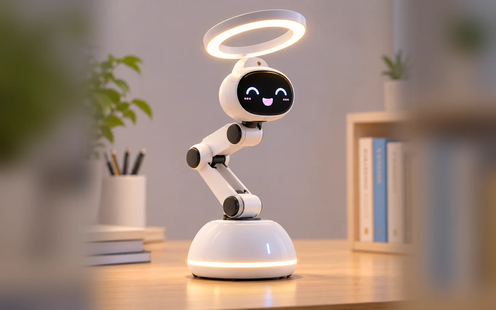

学习辅助灯 / AI DESK ROBOT
它听见你，也回应你。
一个放在桌面上的 AI 机器人。
按下说话，它回答问题、替你计时；
开口时转头看你，答完轻轻点头。
它不是台灯：光环只做状态，不提供照明。
- 交互
- VOICE语音问答
- 动作
- BUS SERVO转头 / 点头
- 反馈
- TFT + RING表情 / 状态

01 / WHY IT EXISTS
不是又一盏灯，
是桌面上的另一个在场者。
学习最贵的成本不是查不到答案，而是每次都要拿起手机、解锁、打开应用。注意力被打断一次，要花很久才回到刚才那一页。
学习辅助灯 把问答、计时和提醒放回桌面：抬头说一句，它听完、想一下，再用声音、表情和动作回应。
它不面向教室，面向下班后的书桌——那些白天上班、晚上还要学两小时的人。
A / 01
4类
交互通道
语音 / 动作 / 屏幕 / 灯环
A / 02
2个
总线舵机
转头 / 点头
A / 03
TFT
TFT 状态屏
表情与计时
A / 04
光环
状态光环
只做状态反馈
以上为阶段一、阶段二的目标配置。RIG-Arm 套件与灯环尚未装到样机，当前仍用开发板验证语音链路。
查看技术与验证边界
02 / INTERACTIVE TWIN
现在，让它
回应你一次。
打开整机数字样机：让摄像头发现你、转动双舵机，或进入语音仿真，看看一句话如何变成回答与动作。
打开数字样机
LIVE SIMULATION